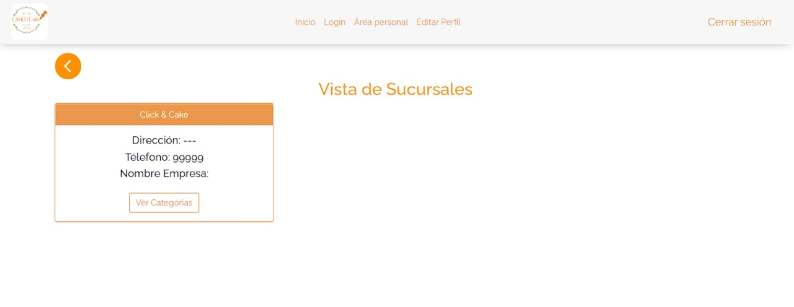
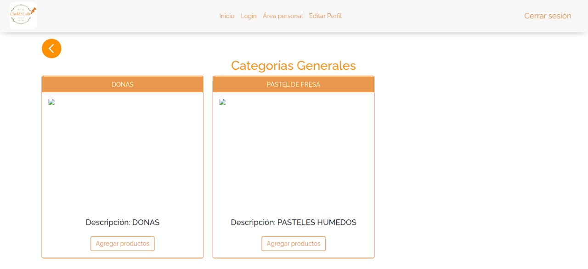
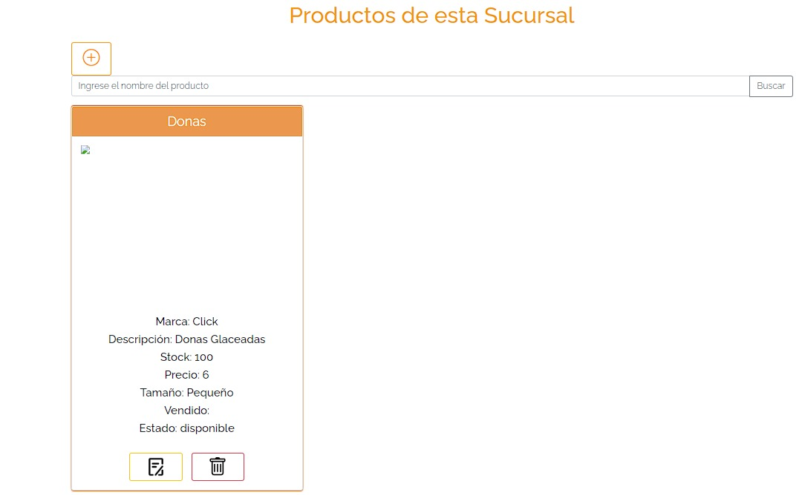
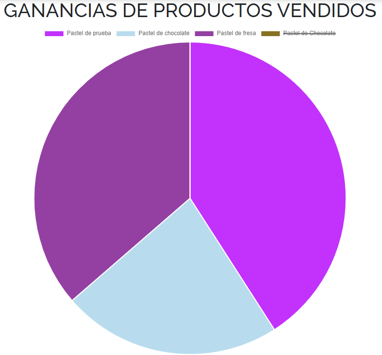

1. Ver sucursal asignada
Como gestor puede ver la sucursal que se le fue asignada.
2. Categorias
En la seccion de sucursales podra ver las categorias que tiene esa sucrsal, unicamente puede visualizar las categorias más no agregar.
3. Agregar productos
Como gestor puede agregar todos los productos disponibles a las categorias de la sucursal.
4. Ver ganancias
El gestor puede ver las ganacias que se recaudaron durante el mes.
5. Edicion de perfil
El gestor puede editar su perfil, unicamente los campos que le son permitidos.